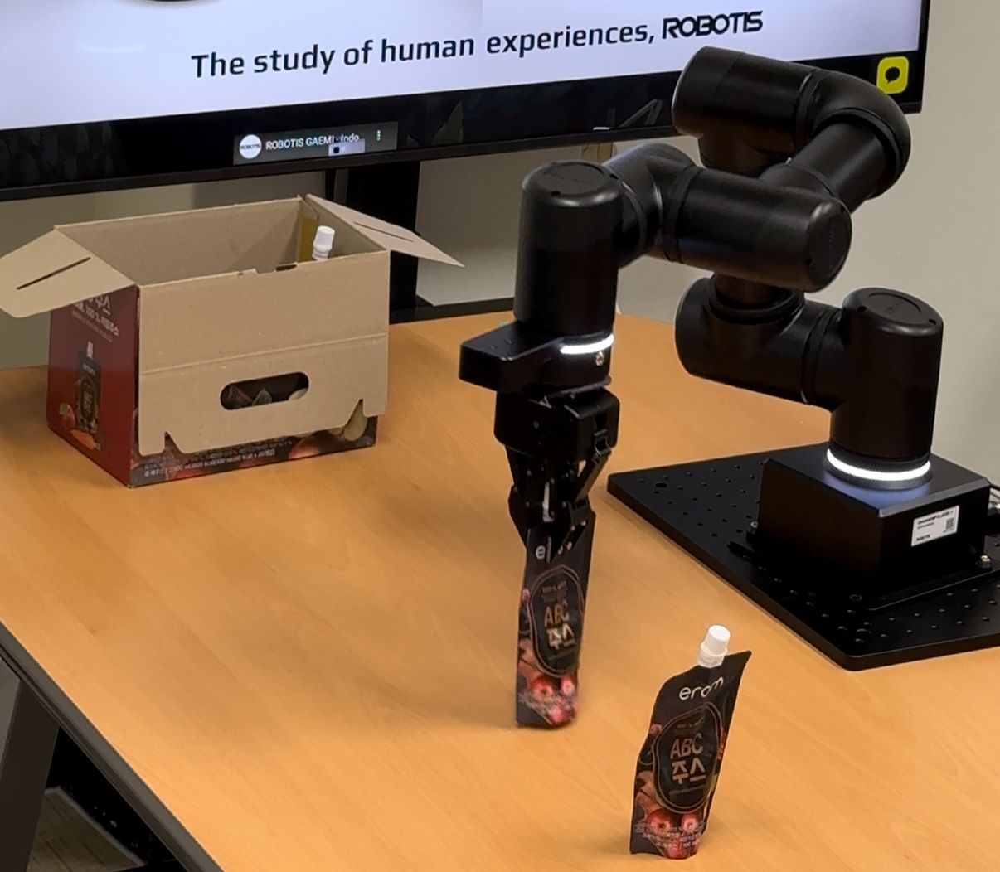
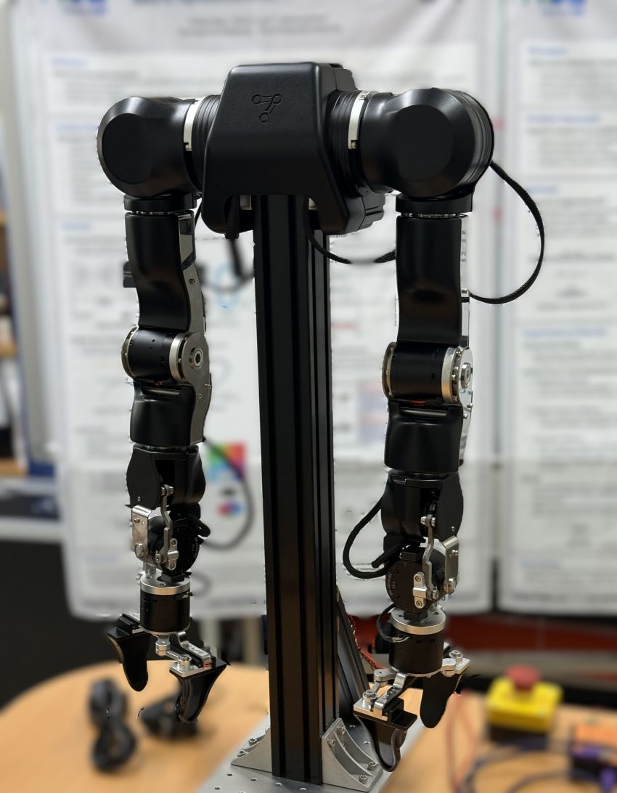
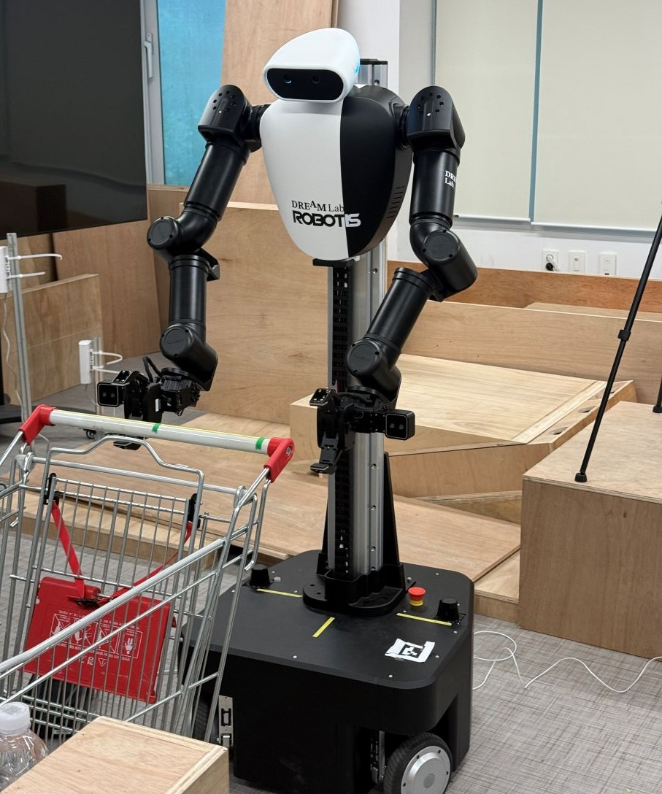
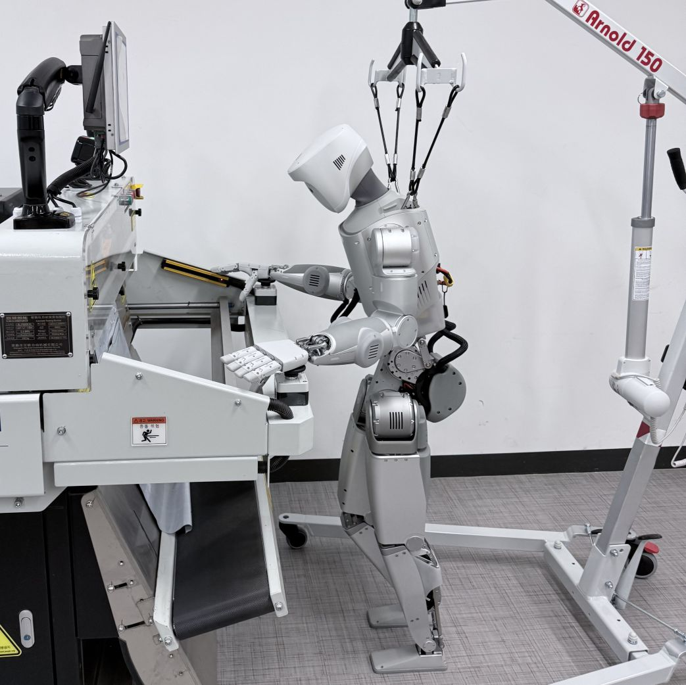

연구실에 오신 것을
환영합니다
이 Wiki는 로보틱스 연구실에서의 첫 발걸음을 돕기 위해 만들어졌습니다. 연구실 생활부터 논문 작성까지, 필요한 모든 정보를 한 곳에서 찾아보세요.
수상 실적
DREAM Lab의 대회 수상 및 주요 성과 기록입니다.
수행 과제
DREAM Lab에서 현재 진행 중이거나 완료한 국가 연구 과제입니다.
| 재원 | 한국연구재단 (NRF) |
| 기간 | 2026.04.01 ~ 2030.12.31 |
| 재원 | 한국산업기술기획평가원 (KEIT) · 산업통상자원부 |
| 기간 | 2025.09.01 ~ 2028.12.31 |
| 재원 | 한국로봇산업진흥원 (KIRIA) · 산업통상자원부 |
| 기간 | 2025.09.01 ~ 2025.12.31 |
연구실 소개
DREAM Lab의 연구 분야와 구성원을 소개합니다.
DREAM Lab은 Dynamic Robotic Embodiment and Autonomous Manipulation (DREAM)을 연구합니다. 로봇 팔·휴머노이드·이동형 플랫폼을 결합한 시스템으로, 정적 조작을 넘어 식탁 닦기·유연체 조립 등 동적 환경에서 작동하는 로봇을 만드는 것을 목표로 합니다.
연구 분야
교수
대학원생
학부연구생
주요 논문
2026
2025
2024
2023
2022
연구실 생활 규칙
원활한 연구실 운영을 위해 모든 구성원이 지켜야 할 규칙입니다.
출결 및 근무 시간
- 코어타임: 오전 10시 ~ 오후 4시 — 팀 미팅, 공동 실험, 주요 논의를 위한 시간입니다. 이 시간에는 연락이 닿을 수 있어야 합니다
- 코어타임 외 시간은 자율적으로 운용 가능합니다 — 실험 일정, 집중 작업, 개인 컨디션에 맞게 조율하세요
- 외출·결석이 필요한 경우 슬랙 또는 이메일로 사전 공유해 주세요
- 재택 근무는 교수님의 사전 승인 후 가능하며, 코어타임 중 응답 가능 상태 유지 필수
정기 미팅
| 미팅 종류 | 일정 | 준비사항 |
|---|---|---|
| 주간 개인 미팅 | 교수님께 확인 | 주간 진행 사항, 계획 정리 슬라이드 |
| 그룹 전체 미팅 | 주 1회 (가급적 참여) | 순서에 따라 연구 공유 또는 논문 발표 |
| 저널 클럽 | 월 1회 (요일 확인) | 최신 논문 1편 요약 및 토론 |
커뮤니케이션
- 주요 소통 채널:
Slack— 입장 후 채널 목록 확인 (선배에게 초대 요청) - 이메일은 교수님 및 외부 커뮤니케이션 용도로 사용
- 질문은 먼저 검색하고, 그래도 모르면 적극적으로 물어볼 것
- 슬랙 메시지는 업무 시간 내에 확인 및 응답 (긴급 사항 제외)
연구실 환경 유지
- 개인 자리는 주 1회 정리 정돈
- 공용 장비 사용 후 원상 복구 필수
- 음식물: 지정된 구역에서만 취식 (실험 구역 금지)
- 연구실 보안: 퇴실 시 반드시 잠금 확인
데이터 및 코드 관리
- 모든 코드는
GitHub연구실 Organization에 Push - 실험 데이터는 지정된 서버 디렉토리에 정기 백업
- 미발표 연구 데이터 외부 공유 금지 (교수님 승인 필요)
연구장비 활용 방법
연구실 보유 장비의 사용 절차 및 주의사항입니다.
로봇 팔 플랫폼


휴머노이드 / 모바일 플랫폼


제조 장비
GPU 연산 자원

nvidia-smi로 현황 확인 필수. 장시간 독점 금지.nvidia-smi로 현황 확인 필수. 장시간 독점 금지.GPU 서버 접속
- 서버 IP 및 계정: 선배에게 초기 계정 발급 요청
- 접속:
ssh [username]@[server-ip] - VPN 사용이 필요한 경우 학교 VPN 먼저 연결
- GPU 점유 전
nvidia-smi로 사용 현황 반드시 확인 - 사용 완료 후 불필요한 프로세스 및
tmux세션 정리 - 대용량 데이터는
/data디렉토리에 저장 (홈 디렉토리 용량 주의) - 학습 스크립트 실행 전
nohup또는tmux를 사용해 세션 유지
일정 관리 & 구글캘린더
연구실의 모든 일정은 구글캘린더를 통해 공유 관리됩니다.
구글캘린더 초기 설정
개인 구글 계정에서 연구실 캘린더를 구독하거나, 연구실 공용 계정 정보를 선배에게 안내받으세요.
선배로부터 연구실 공유 캘린더 초대 링크를 받아 구독합니다. (연구실 미팅, 세미나, 장비 예약 캘린더 별도 존재)
구글캘린더 앱을 스마트폰에 설치하고 동기화하면 일정 알림을 놓치지 않을 수 있습니다.
미팅, 실험 일정, 논문 마감일 등을 직접 등록하고 사전 알림을 설정하세요 (권장: 30분 전, 1일 전).
캘린더 사용 규칙
- 장비 예약: 사용 날짜/시간을 캘린더에 먼저 등록 후 사용
- 미팅 불참 시: 캘린더 일정에서 미리 거절 처리 + 슬랙으로 사유 공유
- 외부 출장·학회 참석 일정은 공유 캘린더에 등록
- 개인 방해금지 시간(Deep Work)도 캘린더에 표시 권장
연구자의 마음가짐
훌륭한 연구자로 성장하기 위해 갖춰야 할 태도와 습관입니다.
지적 호기심을 유지하라
연구의 출발점은 호기심입니다. "왜?" "어떻게?" "정말 그럴까?"라는 질문을 항상 가슴에 품으세요. 논문을 읽을 때도, 실험을 할 때도, 항상 비판적 사고를 유지하는 것이 중요합니다.
실패를 두려워하지 마라
실험이 원하는 결과를 주지 않는 것은 실패가 아닙니다. 무엇이 왜 작동하지 않는지를 이해하는 것이 연구의 핵심입니다. 결과가 나쁘더라도 꼼꼼히 기록하고 분석하세요.
좋은 연구자의 습관
- 매일 또는 매주 연구 노트(디지털 또는 수기) 작성 — 실험 설정, 결과, 생각 기록
- 매주 최소 논문 1~3편 읽기 — 분야 동향 파악은 연구의 기본
- 재현 가능한 코드와 실험 환경 유지 (Docker, conda 환경 기록)
- 막히면 혼자 고민하되, 일정 시간(예: 2시간) 후에는 선배나 교수님께 질문
- 다른 연구자의 발표를 경청하고 건설적인 피드백 주고받기
자기 관리
- 번아웃 방지: 규칙적인 수면과 휴식은 연구 생산성을 높입니다
- 목표를 작게 쪼개기: 큰 과제를 주 단위, 일 단위 할 일로 분해하세요
- 비교하지 않기: 동료와 속도를 비교하기보다 어제의 나와 비교하세요
위의 요약본이 지도라면, 이 글은 그 지도를 들고 걷다 마주치는 실제 풍경입니다.
대학원 생활을 하며 맞닥뜨릴 상황들을 솔직하게 이야기합니다.
1. 처음 몇 달 — 아무것도 모르는 것이 정상이다
대학원에 처음 입학하면 주변 선배들이 어떻게 그렇게 많은 것을 알고 있는지 경이롭게 느껴질 것입니다. 미팅에서 나오는 용어들, 논문의 수식들, 실험 세팅의 디테일들. 처음에는 대화의 절반도 알아듣기 어려울 수 있습니다.
그것은 완전히 정상입니다. 선배들도 처음에는 똑같았습니다. 연구라는 세계는 학부 때와 다른 종류의 지식을 요구합니다. 정답이 있는 문제를 빠르게 푸는 능력이 아니라, 정답이 없는 문제를 오래 붙들고 있는 능력입니다. 이 능력은 시간을 투자해야만 생깁니다.
2. 논문을 읽는다는 것 — 이해와 비판 사이
논문을 읽을 때 흔히 저지르는 실수가 두 가지 있습니다. 첫 번째는 논문에 쓰인 모든 것을 진실로 받아들이는 것이고, 두 번째는 반대로 처음부터 불신하며 읽는 것입니다.
좋은 논문 읽기는 그 사이 어딘가에 있습니다. 저자의 주장을 충분히 이해한 뒤, 그 주장이 성립하기 위해 필요한 가정들을 찾아내세요. "이 가정이 우리 상황에서도 성립하는가?" "실험 환경은 실제와 얼마나 다른가?" "비교 대상(baseline)은 공정하게 선택되었는가?" 이런 질문들이 비판적 읽기의 출발점입니다.
- Abstract → Conclusion 먼저 읽기 — 논문의 주장을 먼저 파악하고 세부를 채워나가는 방식이 효율적입니다
- Figure부터 훑기 — 핵심 결과는 대부분 그림에 있습니다. Figure를 이해하면 논문의 절반을 이해한 것입니다
- Related Work는 나중에 — 처음 읽을 때는 건너뛰고, 나중에 맥락을 잡을 때 돌아오세요
- 재현해보기 — 공식 코드가 있다면 직접 실행해보는 것이 가장 깊은 이해로 이어집니다
- 한 줄 요약 남기기 — Zotero나 Notion에 "이 논문이 제안하는 것"과 "한계"를 한 문장씩 기록하세요
3. 실험이 안 될 때 — 디버깅은 연구의 절반이다
로보틱스 연구에서 실험은 좀처럼 처음부터 잘 되지 않습니다. 모터가 과열되거나, 학습이 발산하거나, 재현이 안 되거나, 환경 세팅이 조금 달라지면 성능이 무너지거나. 이런 상황이 반복될 때 가장 위험한 것은 "내가 잘못하고 있는 것 아닐까"라는 자책입니다.
실험이 안 되는 것은 당신이 틀렸다는 신호가 아닙니다. 아직 이해하지 못한 변수가 있다는 신호입니다. 디버깅을 과학적으로 접근하세요. 한 번에 하나의 변수만 바꾸고, 결과를 기록하고, 패턴을 찾아내세요.
"학습이 안 된다"가 아니라 "200 에포크 이후 validation loss가 0.3에서 수렴하며 개선되지 않는다"처럼 구체적으로 기술하세요. 문제를 정확히 기술하는 것만으로 해결의 실마리가 보이는 경우가 많습니다.
복잡한 시스템이 안 된다면, 구성 요소를 하나씩 뺀 최소 재현 사례(minimal reproducible example)를 만드세요. 어디서 무너지는지 범위를 좁혀가는 것이 핵심입니다.
학습률도 바꾸고, 배치 사이즈도 바꾸고, 네트워크 구조도 바꾸면 무엇이 효과가 있었는지 알 수 없습니다. 변수를 격리하세요.
실험 로그, wandb/tensorboard 그래프, 실패한 설정까지 모두 기록하세요. 두 달 뒤에 같은 함정에 빠지지 않기 위해서, 그리고 논문을 쓸 때 ablation study의 재료가 되기 위해서입니다.
혼자 고민하는 것은 미덕이지만, 고집은 시간 낭비입니다. 선배에게 물어볼 때는 무엇을 시도해봤는지를 함께 가져오세요. 그것 자체가 좋은 질문입니다.
4. 슬럼프와 번아웃 — 회복하는 법
대학원생이라면 누구나 한두 번은 심각한 슬럼프를 경험합니다. 논문이 리젝당하거나, 6개월 동안 공들인 아이디어가 이미 발표된 논문과 겹치거나, 실험이 수개월째 제자리를 걷거나. 이런 순간에 "나는 연구자로서 자질이 없는 것 아닐까"라는 생각이 드는 것은 매우 흔한 일입니다.
그리고 그 생각은 대부분 틀렸습니다.
- 슬럼프를 인정하기 — "나는 지금 힘들다"는 것을 부정하지 마세요. 부정은 소진을 가속합니다. 인정해야 회복이 시작됩니다
- 작은 성공 경험 만들기 — 큰 목표를 잠시 내려두고, 하루 안에 완료할 수 있는 작은 일을 완수하세요. 뇌는 작은 성취에도 반응합니다
- 연구 밖의 시간 갖기 — 주 1회는 완전히 연구를 잊는 날을 만드세요. 역설적으로 이것이 연구 생산성을 높입니다
- 선배나 동료에게 털어놓기 — 같은 길을 걸어온 사람들은 당신이 겪는 것을 이미 알고 있습니다. 혼자 감당하지 않아도 됩니다
- 리젝은 종착점이 아니다 — 세계적인 연구자들도 리젝을 받습니다. 리뷰어 코멘트를 연구를 개선할 무료 피드백으로 활용하세요
5. 지도교수와의 관계 — 올바른 협업 방식
지도교수는 상사도, 친구도 아닙니다. 더 정확히는, 당신의 연구 성장에 가장 큰 영향을 미칠 수 있는 멘토이자 공동 연구자입니다. 이 관계를 잘 운용하는 것은 연구 성과만큼이나 중요합니다.
- 미팅 전에 반드시 준비하기 — "별로 한 것이 없어서"라는 이유로 미팅을 두려워하지 마세요. 진행 상황이 없더라도, 막힌 지점과 시도한 것을 정리해서 가져오세요. 교수님이 가장 가치 있게 쓸 수 있는 것은 '문제'를 공유하는 시간입니다
- 나쁜 소식을 빨리 공유하기 — 실험이 실패했거나, 아이디어에 문제가 생겼을 때 숨기고 싶은 마음이 들 수 있습니다. 하지만 일찍 공유할수록 방향을 바꿀 시간이 생깁니다
- 의견 차이를 데이터로 해결하기 — 교수님과 연구 방향에 대해 생각이 다를 때, 감정적으로 설득하려 하기보다 실험 결과나 논문 레퍼런스로 근거를 만들어 오세요
- 기대치를 명확히 하기 — 졸업 요건, 논문 투고 계획, 연구비 상황에 대해 정기적으로 대화하세요. 불명확한 기대치는 양측 모두를 힘들게 합니다
6. 시간 관리 — 깊은 일과 얕은 일을 구분하라
대학원에서의 시간은 회사와 다릅니다. 정해진 업무 시간이 없고, 성과가 즉각 보이지 않으며, 방해 요소는 어디서나 옵니다. 이 환경에서 생산적으로 일하려면 능동적인 시간 설계가 필요합니다.
- 하루 최우선 과제 1개 정하기 — 매일 아침 "오늘 이것 하나만 해도 성공"이라는 과제를 정하세요. 다른 것은 보너스입니다
- Pomodoro 기법 활용 — 25분 집중 + 5분 휴식 사이클. 논문 읽기, 코드 작성 등 집중력을 요하는 작업에 효과적입니다
- 주간 리뷰 하기 — 매주 금요일 30분, 이번 주에 한 것·못 한 것·다음 주 계획을 정리하세요. 연구가 어디로 가고 있는지를 잃지 않습니다
- 회의 전날 준비 원칙 — 미팅이 있는 날 아침은 준비로 낭비되지 않도록, 전날 밤 슬라이드와 메모를 완성해 두세요
- 알림 끄기 — 집중 시간에는 스마트폰과 슬랙 알림을 모두 끄세요. 응답은 하루 2~3회 일괄 처리로도 충분합니다
7. 코드와 실험 관리 — 미래의 나를 위한 기록
6개월 뒤 자신의 코드를 다시 열었을 때 "이게 뭔 코드야"라는 생각이 드는 경험을 누구나 합니다. 논문을 쓸 때 수치를 다시 찾지 못해 실험을 재실행하는 경험도 흔합니다. 이런 낭비는 처음부터 좋은 습관으로 예방할 수 있습니다.
- Git은 무조건 사용 — 실험마다 의미 있는 커밋 메시지와 함께 기록하세요. 과거의 어떤 버전에서 좋은 결과가 나왔는지 되돌아갈 수 있어야 합니다
- 실험 설정을 코드와 분리 — 하이퍼파라미터, 경로, 시드값은
config.yaml또는argparse로 분리하고, 실험마다 설정 파일을 저장하세요 - wandb 또는 tensorboard — 학습 곡선, 지표, 하이퍼파라미터를 모두 자동 기록하세요. 실험을 비교할 때 "어떤 설정이었더라"를 기억에 의존하지 마세요
- README 작성 습관 — 프로젝트마다 환경 설정 방법, 실행 명령어, 주요 결과를 기록하세요. 선배가 당신의 코드를 이어받을 때, 또는 논문 리뷰어가 재현을 시도할 때 반드시 필요합니다
- 데이터 디렉토리 규칙 — 날짜와 실험 이름이 포함된 디렉토리 명명 규칙을 만들고 일관되게 따르세요 (예:
2025-06-15_diffusion_policy_mug_flip/)
8. 커뮤니티와 네트워킹 — 연구는 혼자 하지 않는다
좋은 연구는 고립에서 나오지 않습니다. 학회 발표, 세미나 참석, 다른 연구실과의 교류는 새로운 아이디어의 원천이자, 자신의 연구를 점검하는 기회입니다. 처음에는 낯설고 어색하겠지만, 꾸준히 커뮤니티에 참여하는 것이 장기적으로 연구자 경력에 크게 도움이 됩니다.
- 학회에 논문이 없어도 참가하기 — ICRA, IROS, CoRL 같은 학회는 논문 없이도 참가할 수 있습니다. 최신 연구 동향을 몸으로 느끼는 것은 논문으로 읽는 것과 차원이 다릅니다
- 발표를 두려워하지 않기 — 미숙한 아이디어를 발표하는 것은 부끄러운 일이 아닙니다. 피드백을 일찍 받을수록 연구가 더 빨리 좋아집니다
- X(트위터) / LinkedIn 활용 — 좋아하는 연구자를 팔로우하고, 논문 preprint를 팔로우하세요. arXiv만큼 빠른 동향 파악이 가능합니다
- 다른 연구실 세미나 참석 — 학교 내 다른 연구실 세미나에 가끔 참석해보세요. 자신의 분야를 다른 시각에서 볼 기회가 됩니다
9. 대학원 생활을 오래 지속하는 법
대학원은 마라톤입니다. 석사 2년, 박사 4~5년. 처음의 열정만으로는 완주하기 어렵습니다. 지속하기 위해서는 구조가 필요합니다.
- 연구의 이유를 기억하기 — 처음 대학원에 오고 싶었던 이유, 이 연구를 하고 싶었던 이유를 어딘가에 적어두고 힘들 때 꺼내 보세요
- 작은 마일스톤 자축하기 — 첫 논문 제출, 첫 학회 발표, 첫 코드 PR 머지. 이런 순간들을 의미 있게 기념하세요
- 몸을 관리하기 — 수면 부족과 운동 부족은 인지 능력을 직접 떨어뜨립니다. 주 3회 이상의 신체 활동은 연구 생산성의 투자입니다
- 연구 밖의 정체성 유지하기 — 취미, 친구, 가족. 연구자이기 이전에 한 사람입니다. 연구 밖의 삶이 연구 안의 창의성을 지탱합니다
10. 결국 중요한 것
좋은 연구자가 된다는 것은 지식이 많아지는 것이 아닙니다. 불확실성 속에서 방향을 잡는 능력, 모르는 것을 인정하고 배우는 자세, 오래 생각하고 기다릴 수 있는 인내심. 이것들이 쌓여서 만들어지는 것입니다.
논문은 결과물이지만, 연구자로서의 성장은 그 과정에서 일어납니다. 결과에 집착하기보다 매일의 과정에 충실하세요. 어느 순간 돌아보면, 생각보다 많이 와 있을 것입니다.
📚 더 읽어볼 자료
연구 질문 만드는 방법
좋은 연구는 명확하고 의미 있는 질문에서 시작됩니다.
좋은 연구 질문의 조건
- 구체성 (Specificity) — "로봇이 물건을 잘 집는가?" ❌ → "50개의 데모로 학습한 Diffusion Policy는 훈련에 없던 색상의 컵에 대해 얼마나 일반화되는가?" ✅
- 실현가능성 (Feasibility) — 현재 연구실 자원(장비·데이터·시간)으로 답할 수 있어야 함. "모든 가정용 물체를 집을 수 있는 범용 그리퍼" ❌ → "OMY로 5가지 형상의 물체를 집는 정책 학습" ✅
- 중요성 (Significance) — 풀리면 분야가 앞으로 나아가는 질문. "접촉이 많은 조작(contact-rich manipulation)에서 언제 강화학습보다 모방학습이 더 효과적인가?" — 실용적이고 커뮤니티 관심사
- 참신성 (Novelty) — 아직 문헌에서 제대로 다뤄지지 않은 갭. VLA 모델 평가는 대부분 정적 테이블탑에 국한 — "이동 베이스 진동이 손목 카메라 기반 조작 정책 성공률에 미치는 영향"은 거의 측정된 적 없음
연구 질문 도출 프로세스
최근 3~5년간의 서베이/리뷰 논문을 통해 분야 전체 그림을 파악하세요. Google Scholar, Semantic Scholar 활용.
좋은 논문의 한계점 섹션은 다음 연구 질문의 보물창고입니다. "이 한계를 해결하면 어떻게 될까?"
많이 연구된 것은 무엇인지, 아직 덜 다뤄진 시나리오나 조건은 무엇인지 정리합니다.
후보 질문 목록을 가지고 교수님과 미팅합니다. 이 단계에서의 피드백이 방향을 크게 바꿀 수 있습니다.
질문을 검증 가능한 가설로 변환하고, 어떤 실험으로 답할 수 있는지 구체화합니다.
유용한 도구
Google Scholar— 인용 수 기반 중요 논문 탐색Semantic Scholar— AI 기반 관련 논문 추천Connected Papers— 논문 간 관계 시각화Zotero / Mendeley— 논문 정리 및 인용 관리
논문 쓰는 방법
첫 논문 작성부터 투고까지의 단계별 가이드입니다.
논문 구조 이해하기
| 섹션 | 핵심 질문 | 분량 (기준) |
|---|---|---|
| Abstract | 무엇을, 왜, 어떻게, 결과는? | 150–250단어 |
| Introduction | 왜 이 문제가 중요한가? | 1–1.5페이지 |
| Related Work | 기존 연구는 무엇이고 한계는? | 1페이지 |
| Method | 우리 접근법은 무엇인가? | 2–3페이지 |
| Experiments | 어떻게 검증했고 결과는? | 2–3페이지 |
| Conclusion | 요약과 향후 연구 방향 | 0.5페이지 |
작성 프로세스 (권장)
포맷(IEEE, ACM, Springer 등), 페이지 수, 마감일을 파악한 후 작성을 시작합니다.
핵심 실험 결과 그래프, 시스템 다이어그램을 먼저 완성합니다. 그림이 이야기를 이끕니다.
무엇을 했는지(실험) → 어떻게(방법) → 왜(서론) 순서가 흐름을 잡기 쉽습니다.
전체 내용이 확정된 후 작성해야 정확한 포지셔닝이 가능합니다.
최소 2–3 라운드의 수정을 예상하세요. Grammarly 또는 원어민 교정 서비스 활용 권장.
LaTeX 환경 설정
- 온라인:
Overleaf사용 권장 (공동 편집 용이, 연구실 팀 계정 여부 선배에게 확인) - 템플릿: 목표 학회 공식 템플릿 다운로드 후 사용
- 참고문헌 관리:
MyBib+ BibTeX 연동 추천
시뮬레이션 환경 구축
로봇 연구에서 시뮬레이션은 실험 비용과 위험을 줄이는 필수 도구입니다. 우리 연구실에서 주로 사용하는 환경과 구축 방법을 정리합니다.
시뮬레이터 비교
| 시뮬레이터 | 주요 용도 | 장점 | 단점 |
|---|---|---|---|
| MuJoCo | 강화학습, 동역학 연구 | 빠른 물리 엔진, RL에 최적화, 우수한 접촉 모델 | 시각적 품질 낮음, 학습 곡선 있음 |
| NVIDIA Isaac Sim | 포토리얼리스틱, 합성 데이터 | GPU 가속 물리, 사실적 렌더링, ROS 2 지원 | 설치 복잡, NVIDIA GPU 필수 |
| Gazebo (Harmonic) | ROS 연동 범용 실험 | ROS 2 네이티브, 다양한 플러그인 | Classic EOL(2025.1), 버전 혼란 주의 |
MuJoCo 시작하기
pip install mujoco 로 Python 바인딩 설치. 공식 문서의 Getting Started를 따라 Hello World 씬을 먼저 실행해 보세요.
로봇 URDF가 있으면 mujoco.MjModel.from_xml_string()으로 로드 가능. MuJoCo Menagerie에서 다양한 레퍼런스 모델을 참고하세요.
gymnasium 인터페이스로 MuJoCo 환경 래핑 후 Stable-Baselines3 / CleanRL 등과 연동합니다.
학습 속도가 필요하면 Isaac Sim 기반 Isaac Lab(GPU 병렬 시뮬레이션)으로 전환을 검토하세요.
NVIDIA Isaac Sim + ROS 2 연동
NVIDIA Omniverse Launcher를 통해 Isaac Sim 설치. RTX GPU 필수. 공식 NVIDIA 가이드를 따라 진행하세요.
URDF Importer 확장을 사용해 로봇 모델을 불러오고, 테이블·오브젝트 등 실험 환경을 구성합니다.
Action Graph에서 ROS 2 Bridge를 연결해 /joint_states, 카메라 토픽 등을 ROS 2와 통신합니다.
Replicator 확장을 사용해 도메인 랜덤화된 합성 이미지 데이터셋을 생성할 수 있습니다.
우리 연구실 장비별 시뮬레이션 지원 현황
| 장비 | MuJoCo | Isaac Sim / Lab | Gazebo |
|---|---|---|---|
| ROBOTIS OMY | 지원 | 지원 ↗ | 지원 |
| AI Worker FFW-SG2 | MJCF 제공 | 지원 ↗ | URDF/SDF |
| OpenArm | 지원 | 지원 ↗ | 지원 |
| IGRIS C | URDF 변환 | URDF 변환 | URDF 변환 |
📚 레퍼런스 & 공식 문서
시뮬레이터 공식 문서
ROS 2 & 우리 연구실 장비 문서
학습 & 튜토리얼
연구 환경 세팅
리눅스 터미널, 개발 도구, 생산성 유틸리티 등 연구를 시작하기 전에 익혀두면 좋은 환경 세팅 가이드입니다.
📚 필수 학습 자료
🛠 권장 개발 환경 체크리스트
- 터미널 멀티플렉서 —
tmux설치 및 기본 단축키 숙지. 서버 SSH 세션 유지에 필수 - 쉘 설정 —
zsh+oh-my-zsh또는bash+~/.bashrcalias 정리 - 에디터 —
VSCode+ Remote SSH 확장으로 서버 코드를 로컬에서 편집 - Python 환경 —
conda또는venv로 프로젝트별 환경 분리. 전역 pip install 금지 - Git 기본 설정 —
user.name,user.email, SSH key 등록,.gitignore습관화 - fzf —
Ctrl+R히스토리 검색,Ctrl+T파일 탐색 단축키 설정 - Missing Semester — 최소 Shell Tools, Vim, Git, tmux 챕터 완독 권장
관련 기사
우리 연구실 및 연구 분야(휴머노이드·로봇 조작·Physical AI)와 관련된 국내 언론 보도를 모아둔 페이지입니다.
🏫 연구실 관련
🇰🇷 국내 로봇 산업 & 정책 동향
🔬 연구 분야 기술 동향
#general에 공유해 주세요. 정기적으로 업데이트합니다.연구실 소개
DREAM Lab에 관심을 가져주셔서 감사합니다.
현재 모집 중
우리가 추구하는 연구
- 로봇 팔 + 이동형 플랫폼(바퀴형 로봇, 휴머노이드) 결합 이동형 조작 시스템
- 정적 조작뿐 아니라 식탁 닦기, 유연체 조립 등 동적 상황 대응 연구
- 강화학습·모방학습 기반 로봇 학습 알고리즘 개발
- 효율적 데이터 수집 방법 및 범용 하드웨어 최적화
연구실 문화
- 수평적 소통: 교수님과 학생 모두 열린 토론 환경
- 자기 주도 연구: 주제 선정에서 구성원의 의견을 적극 반영
- 협업 강조: 개인 연구보다 팀으로 더 큰 문제 해결 지향
- 글로벌 지향: 영어 논문 작성 및 국제 학회 발표 지원
더 알아보기
연구 프로젝트, 출판 목록, 구성원 소개는 공식 홈페이지를 방문해 주세요.
학부연구생 프로그램
학부생으로서 연구실을 경험하고 싶은 학생들을 위한 안내입니다.
프로그램 개요
학부연구생 프로그램은 로보틱스 연구에 관심 있는 학부생이 실제 연구 환경을 경험할 수 있는 기회입니다. 대학원 진학을 고려하는 학생에게 특히 권장합니다.
참여 시간
- 기본 활동 시간: 오전 10시 ~ 오후 6시 (유연하게 조정 가능)
- 참여 일자 및 시간은 본인 수업·일정에 맞춰 조율 가능합니다 — 사전 협의 필수
- 랩미팅은 야간에 진행될 수 있으며, 참여를 권장합니다
- 핵심은 시간이 아니라 연구 기여도입니다 — 꾸준한 참여와 진도 공유가 중요합니다
지원 자격
- 본교 학부 재학생 우선 (전공 무관, 단 관련 수업 이수 권장) · 타교생은 사전 연락 후 별도 협의
- Python 또는 C++ 기초 프로그래밍 가능자 우대
- ROS(로봇 운영 체제) 또는 강화학습 경험자 우대
- 군집 휴머노이드, VLA 모델에 관심 있는 학생 환영
프로그램 내용
| 단계 | 내용 | 기간 |
|---|---|---|
| 온보딩 | 연구실 툴 세팅, 논문 읽기, 코드베이스 파악 | 2–4주 |
| 보조 연구 | 기존 프로젝트 실험 보조, 데이터 수집 | 2–3개월 |
| 독립 과제 | 작은 연구 과제 수행 및 발표 | 1–2개월 |
혜택
- 실제 연구 경험 및 지도교수 추천서 발급 가능
- 연구실 내부 세미나 및 논문 리딩 참여
- 장기 우수 참여자 논문 공동저자 기회
- 대학원 진학 시 우대 (지원 전 상담 가능)
[학부연구생 지원]을 명시해 주세요.연구실 진학 방법
대학원 진학 또는 학부연구생 지원을 고려하는 분들을 위한 안내입니다.
대학원 입학 프로세스
지원 전 최소 2–3편의 최근 논문을 읽고, 어떤 연구를 하고 싶은지 생각해 두세요.
교수님께 연구 관심사, 본인 소개, 이력서를 첨부한 이메일을 보내세요. 대학원 공식 지원 전 사전 컨택을 강력히 권장합니다.
교수님과 면담을 통해 연구 방향, 역량, 동기를 나눕니다. 간단한 기술 인터뷰가 있을 수 있습니다.
학교 대학원 입학 일정에 맞춰 공식 지원서를 제출합니다. 지원 마감일은 학교 홈페이지에서 확인하세요.
이메일 작성 가이드
- 제목:
[대학원 지원 문의] 이름 / 소속 / 입학 희망 시기 - 본문: 자기소개 → 관심 연구 분야 → 논문 읽은 내용 언급 → 지원 동기 → 질문
- 첨부: CV(이력서), 성적표, 포트폴리오(있는 경우)
- 이메일은 간결하고 명확하게 — 길수록 좋은 것이 아닙니다
자주 묻는 질문
A. 네, 가능합니다. 기계, 전자, 컴퓨터공학 등 다양한 배경의 학생을 환영합니다. 핵심은 열정과 학습 의지입니다.
A. 합격한 대학원생에게는 연구 지원금/장학금이 지급됩니다. 세부 조건은 면담 시 논의합니다.
A. 공식 입학 지원은 가능하지만, 사전 컨택을 통해 교수님의 현재 모집 여부를 확인하는 것을 강력히 권장합니다.